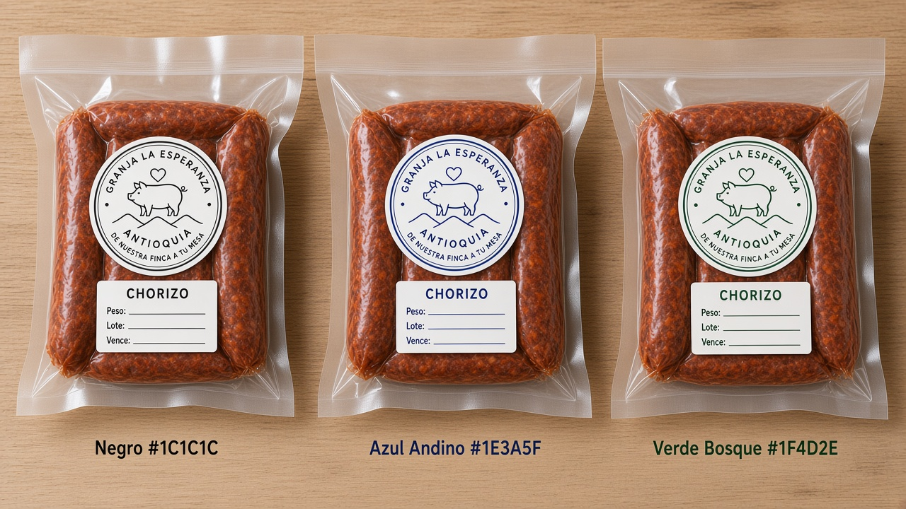
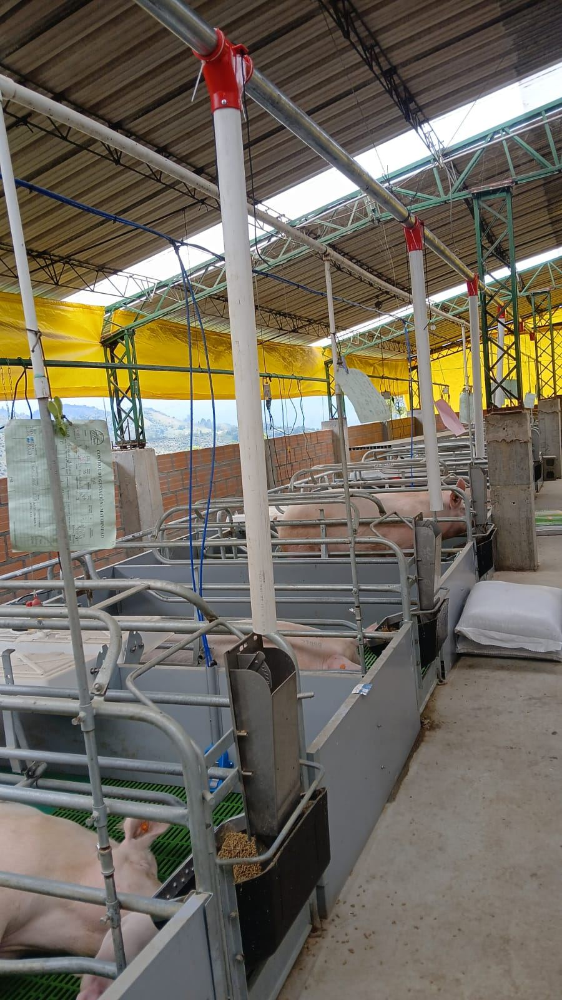
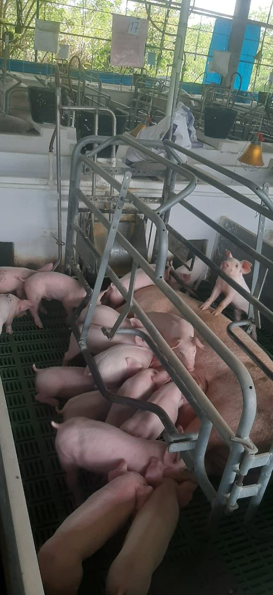
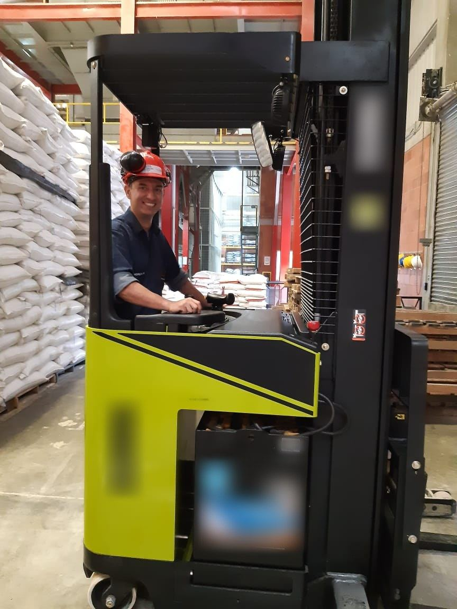

01Chorizo antioqueño
Receta de la casa, especias naturales y tripa natural.
[Presentación · peso · precio — EDITAR]Pedir por WhatsApp →
Cerdo de ciclo completo, criado con alimento propio y llevado en nuestros camiones. Así, sin intermediarios.
Aquí no compramos cerdo para revender. Lo vemos nacer, lo alimentamos con lo que nosotros mismos producimos y lo llevamos a tu mesa con el orgullo de una familia antioqueña.


[TEXTO EDITABLE] Granja La Esperanza nació del sueño de cuatro socios unidos por la familia y el amor por el campo antioqueño. [Año de fundación, municipio, cómo empezó — EDITAR]
Hoy somos una empresa formal con un equipo dedicado que controla cada paso, desde la genética hasta la entrega. Así le cumplimos a quien confía en nosotros.
— Desde [AÑO], en Antioquia
Seleccionamos líneas genéticas de alto desempeño para un cerdo sano, magro y de buen sabor.
Fabricamos nuestro propio alimento en planta. Cada ración, controlada por nosotros.
200 cerdas madres organizadas en bandas quincenales: abastecimiento continuo todo el año.
En nuestra propia planta transformamos la carne en cortes y productos cárnicos con controles de calidad.
Dos camiones propios llevan el producto fresco directo a tu negocio o tienda.

01Receta de la casa, especias naturales y tripa natural.
Corte jugoso para plancha, parrilla o apanada.
Para asar lento, ahumar o el sancocho del domingo.
El alma del chicharrón y de la bandeja paisa.
Magro y tierno, para ocasiones especiales.
Tradicional, con la receta de siempre.
Fotos de referencia del empaque. [Reemplazar por fotos reales de cada producto]
Abastecemos expendios, famas y restaurantes con cerdo en canal de calidad constante. Con bandas cada 15 días, tu pedido es programable y continuo.
Detrás de cada producto hay un equipo dedicado que cuida, cumple y responde. [TEXTO EDITABLE]

Fotos reales de nuestra maternidad, planta de alimento y planta de proceso en Antioquia. Toca cualquier imagen para verla completa.
Animales tranquilos, bien alimentados y en instalaciones adecuadas.
Protocolos de ingreso, limpieza y control sanitario en granja.
Sabemos el origen de cada animal: de la banda a tu mesa.
ICA: [N.º registro — EDITAR]
INVIMA: [N.º registro — EDITAR]